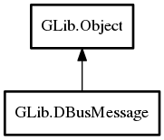

- DBusMessage
- locked
- bytes_needed
- DBusMessage
- DBusMessage.from_blob
- DBusMessage.method_call
- DBusMessage.method_error
- DBusMessage.method_error_literal
- DBusMessage.method_error_valist
- DBusMessage.method_reply
- DBusMessage.signal
- @lock
- copy
- get_arg0
- get_body
- get_byte_order
- get_destination
- get_error_name
- get_flags
- get_header
- get_header_fields
- get_interface
- get_locked
- get_member
- get_message_type
- get_num_unix_fds
- get_path
- get_reply_serial
- get_sender
- get_serial
- get_signature
- get_unix_fd_list
- set_body
- set_byte_order
- set_destination
- set_error_name
- set_flags
- set_header
- set_interface
- set_member
- set_message_type
- set_num_unix_fds
- set_path
- set_reply_serial
- set_sender
- set_serial
- set_signature
- set_unix_fd_list
- to_blob
- to_gerror
DBusMessage
Object Hierarchy:
Description:
A type for representing D-Bus messages that can be sent or received on a DBusConnection .
Namespace: GLib
Package: gio-2.0
Content:
Properties:
Static methods:
- public static ssize_t bytes_needed (uint8[] blob) throws Error
Utility function to calculate how many bytes are needed to completely deserialize the D-Bus message stored at
blob.
Creation methods:
- public DBusMessage ()
Creates a new empty DBusMessage.
- public DBusMessage.from_blob (uint8[] blob, DBusCapabilityFlags capabilities) throws Error
Creates a new DBusMessage from the data stored at
blob. - public DBusMessage.method_call (string name, string path, string interface_, string method)
Creates a new DBusMessage for a method call.
- public DBusMessage.method_error (DBusMessage method_call_message, string error_name, string error_message_format, ...)
Creates a new DBusMessage that is an error reply to this.
- public DBusMessage.method_error_literal (DBusMessage method_call_message, string error_name, string error_message)
Creates a new DBusMessage that is an error reply to this.
- public DBusMessage.method_error_valist (DBusMessage method_call_message, string error_name, string error_message_format, va_list var_args)
Like DBusMessage.method_error but intended for language bindings.
- public DBusMessage.method_reply (DBusMessage method_call_message)
Creates a new DBusMessage that is a reply to this.
- public DBusMessage.signal (string path, string interface_, string @signal)
Creates a new DBusMessage for a signal emission.
Methods:
- public DBusMessage copy () throws Error
Copies this.
- public unowned string get_arg0 ()
Convenience to get the first item in the body of this.
- public weak Variant get_body ()
Gets the body of a message.
- public DBusMessageByteOrder get_byte_order ()
Gets the byte order of this.
- public unowned string get_destination ()
Convenience getter for the g_dbus_message_header_field_destination header field.
- public unowned string get_error_name ()
Convenience getter for the g_dbus_message_header_field_error_name header field.
- public DBusMessageFlags get_flags ()
Gets the flags for this.
- public Variant get_header (DBusMessageHeaderField header_field)
Gets a header field on this.
- public uchar[] get_header_fields ()
Gets an array of all header fields on this that are set.
- public unowned string get_interface ()
Convenience getter for the g_dbus_message_header_field_interface header field.
- public bool get_locked ()
Checks whether this is locked.
- public unowned string get_member ()
Convenience getter for the g_dbus_message_header_field_member header field.
- public DBusMessageType get_message_type ()
Gets the type of this.
- public uint32 get_num_unix_fds ()
Convenience getter for the g_dbus_message_header_field_num_unix_fds header field.
- public unowned string get_path ()
Convenience getter for the g_dbus_message_header_field_path header field.
- public uint32 get_reply_serial ()
Convenience getter for the g_dbus_message_header_field_reply_serial header field.
- public unowned string get_sender ()
Convenience getter for the g_dbus_message_header_field_sender header field.
- public uint32 get_serial ()
Gets the serial for this.
- public unowned string get_signature ()
Convenience getter for the g_dbus_message_header_field_signature header field.
- public weak UnixFDList get_unix_fd_list ()
Gets the UNIX file descriptors associated with this, if any.
- public void @lock ()
If this is locked, does nothing.
- public string print (uint indent = 0)
Produces a human-readable multi-line description of this.
- public void set_body (Variant body)
Sets the body this.
- public void set_byte_order (DBusMessageByteOrder byte_order)
Sets the byte order of this.
- public void set_destination (string value)
Convenience setter for the g_dbus_message_header_field_destination header field.
- public void set_error_name (string value)
Convenience setter for the g_dbus_message_header_field_error_name header field.
- public void set_flags (DBusMessageFlags flags)
Sets the flags to set on this.
- public void set_header (DBusMessageHeaderField header_field, Variant? value)
Sets a header field on this.
- public void set_interface (string value)
Convenience setter for the g_dbus_message_header_field_interface header field.
- public void set_member (string value)
Convenience setter for the g_dbus_message_header_field_member header field.
- public void set_message_type (DBusMessageType type)
Sets this to be of
type. - public void set_num_unix_fds (uint32 value)
Convenience setter for the g_dbus_message_header_field_num_unix_fds header field.
- public void set_path (string value)
Convenience setter for the g_dbus_message_header_field_path header field.
- public void set_reply_serial (uint32 value)
Convenience setter for the g_dbus_message_header_field_reply_serial header field.
- public void set_sender (string value)
Convenience setter for the g_dbus_message_header_field_sender header field.
- public void set_serial (uint32 serial)
Sets the serial for this.
- public void set_signature (string value)
Convenience setter for the g_dbus_message_header_field_signature header field.
- public void set_unix_fd_list (UnixFDList? fd_list)
Sets the UNIX file descriptors associated with this.
- public uint8[] to_blob (DBusCapabilityFlags capabilities) throws Error
Serializes this to a blob.
- public bool to_gerror () throws Error
If this is not of type g_dbus_message_type_error does nothing and returns false.
Inherited Members:
All known members inherited from class GLib.Object